Kawakami, Nara: things to do, food and stays
Kawakami · Nara
Kawakami
Highlighted on the Nara map.

Stay
湯盛温泉 ホテル杉の湯
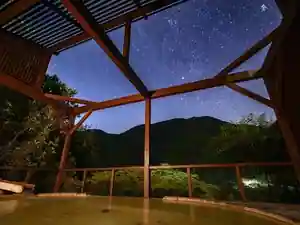
Yu Jo Onsen Hotel Sugi No Yu
Hotel at Yujo Onsen in Sako, Kawakami.
料理旅館 朝日館
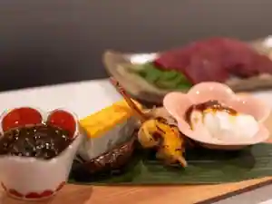
Ryori Ryokan Asahi Kan
匠の聚コテージ
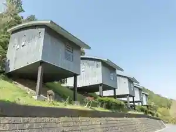
Takumi No Ju Cottage
Cottages in Higashikawa, Kawakami with room-only plans and family-friendly stays.
Dining
入之波温泉 山鳩湯
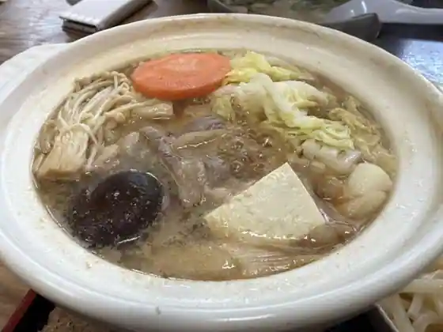
Nyu Yuki Nami Onsen Yamabato Yu
草もち 柿の葉すし 徳岡 吉野郡川上村店
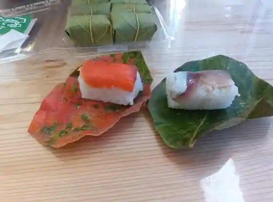
Kusa Mochi Kaki No Ha Sushi Tokuoka Yoshino Gun Kawakami Mura
道の駅 杉の湯川上 麺コーナー
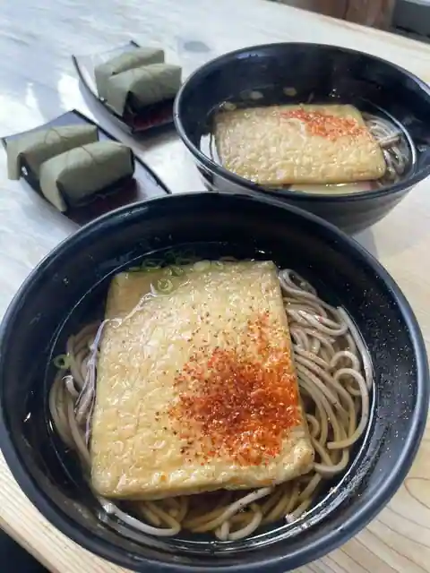
Michi No Eki Sugi No Yukawa Ue Men Kona
匠の聚 ギャラリー カフェ
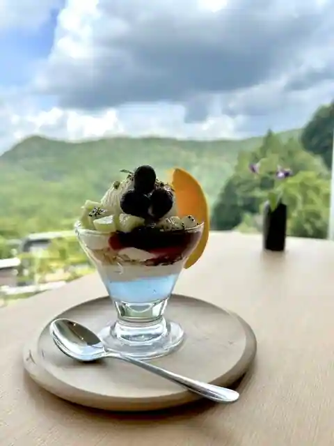
Takumi No Ju Gyarari Cafe
レストラン 山吹
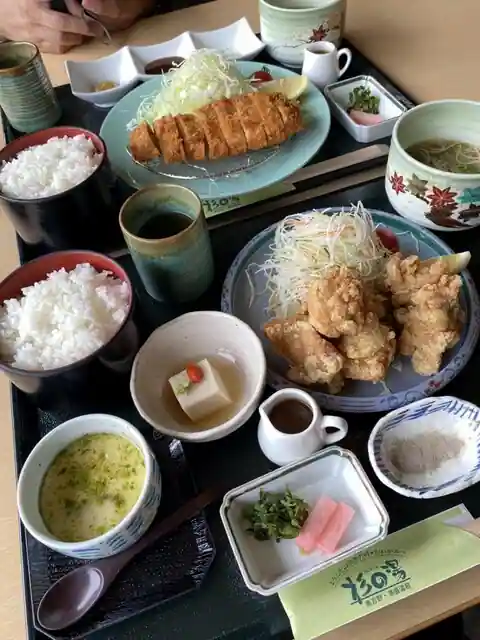
Restaurant Yamabuki
大滝茶屋
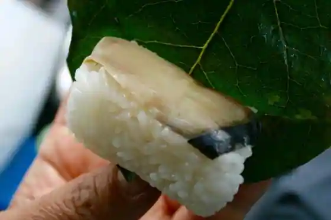
Otaki Chaya
松屋
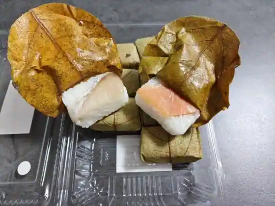
Matsuya
シーズン
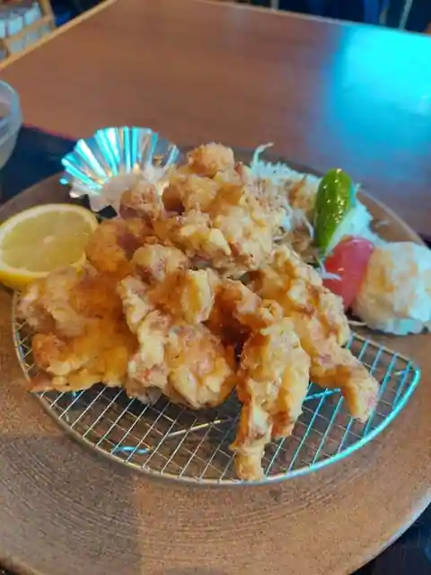
Shizun
オープン カフェ 秀
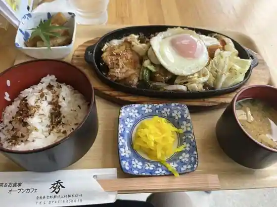
Opun Cafe Shu
喫茶 ホラあな
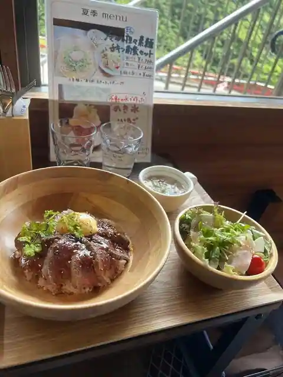
Kissa Hora Ana
喫茶＆お食事 秀
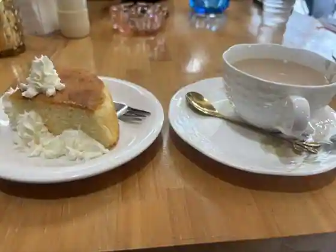
Kissa & O Shokuji Shu
道の駅 杉の湯川上 ふるさと市場
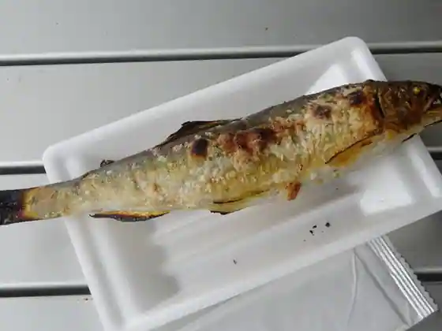
Michi No Eki Sugi No Yukawa Ue Furusato Shijo
朝日館
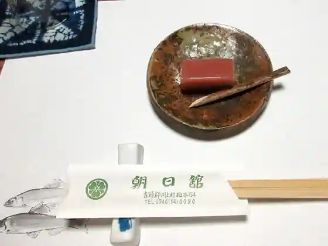
Asahi Kan
アルポールかわかみ
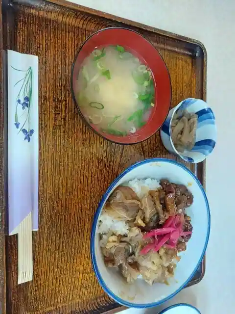
Aruporu Kawakami
くらや食堂
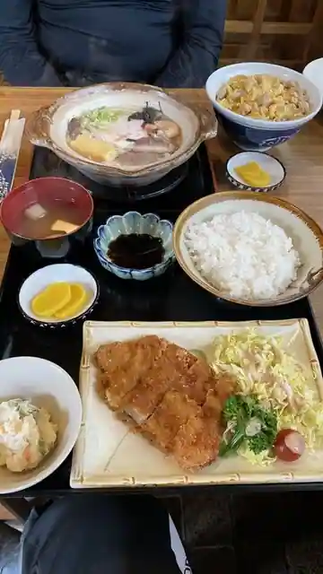
Kuraya Shokudo
杉
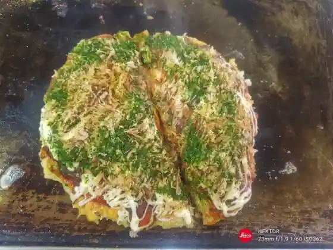
Sugi
TocoTocoの森カフェ
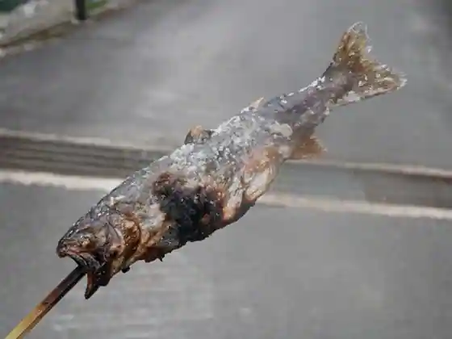
TocoToco No Mori Cafe
Sights
Akitsu no Ono Supotsu Park
Akitsu no Ono Park

San Yuki Ko Tennenrin

Fudo Kutsu Limestone Cave

Nakai Keikoku Shizen Juku

Tanjo Kawakami Shrine Kamiyashiro
I Hikari Shrine
I Kori Shika Village · Morimori Kan
Takumi no Ju
Dai Tenjo Taki
Otaki Dam Manabe Ru Bosai Suteshon
Kawakami Sogo Center Yamabuki Horu
Mifune Falls
Kijigamori Gorge
Mori to Mizu no Genryu Kan
Rekishi no Shonin
Karasugawa Shrine
Biwa Falls
Shiro Ya Gaku
Shirakawa Watari Oto Campground
Shirahige Gaku
Fuku Gen Tera
Tombo Falls
Un Kawa Tera
Roadside Station Sugi Baths Kawakami
Kongoji (Kawakami)